- 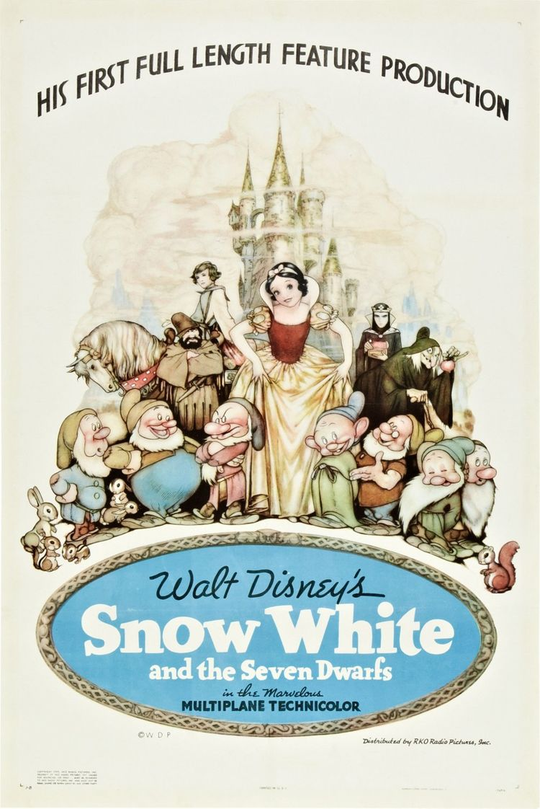
- 제목 : 백설공주와 일곱 난쟁이(1937)
- OST :
- A Smile and song (미소 짓고 노래부르자)
- Whistle While You Work (휘파람 불면서)
- Someday My Prince Will Come (언젠간 왕자님이 올 거야)
- I'm wishing/One song (나의 소원/한 노래)
- 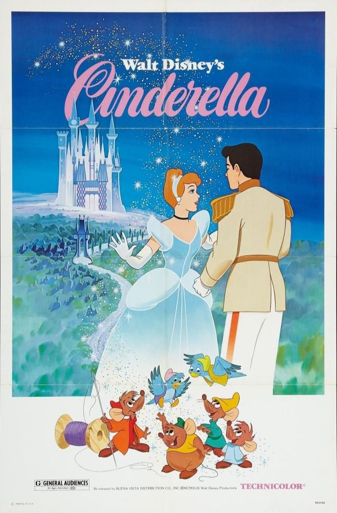
- 제목 : 신데렐라(1950)
- OST :
- A Dream Is a Wish Your Heart Makes (꿈은 마음속의 소망)
- Oh, Sing Sweet Nightingale (예쁜 나이팅게일)
- So This Is Love (아름다운 우리 사랑)(듀엣곡)
- 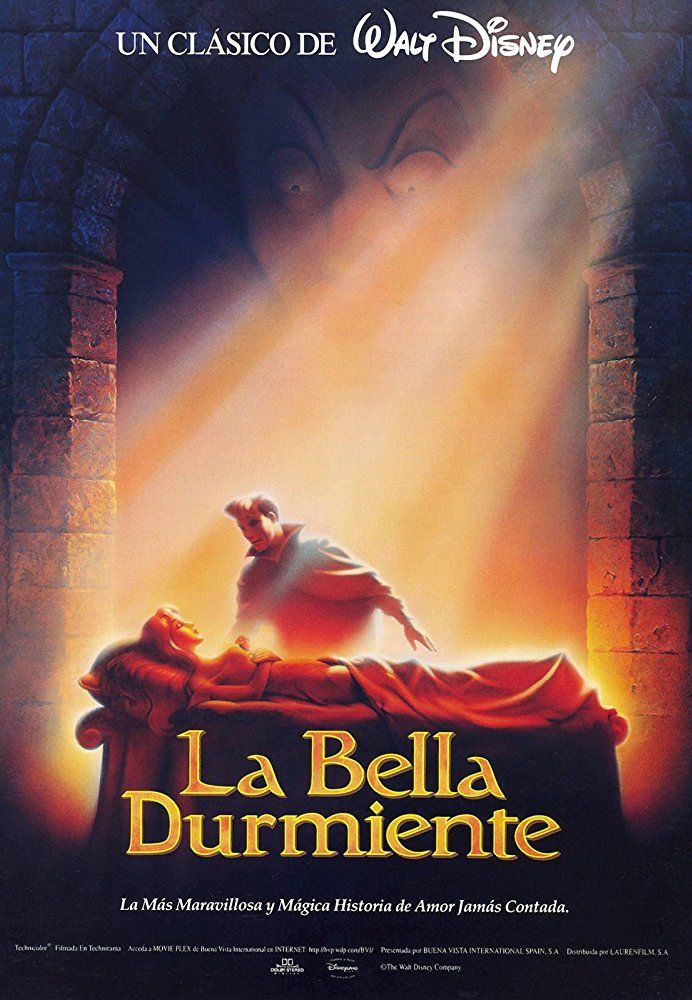
- 제목 : 잠자는 숲속의 공주(1959)
- OST :
- I Wonder
- Once upon a dream(어느 날 꿈 속에서)(듀엣곡)
- 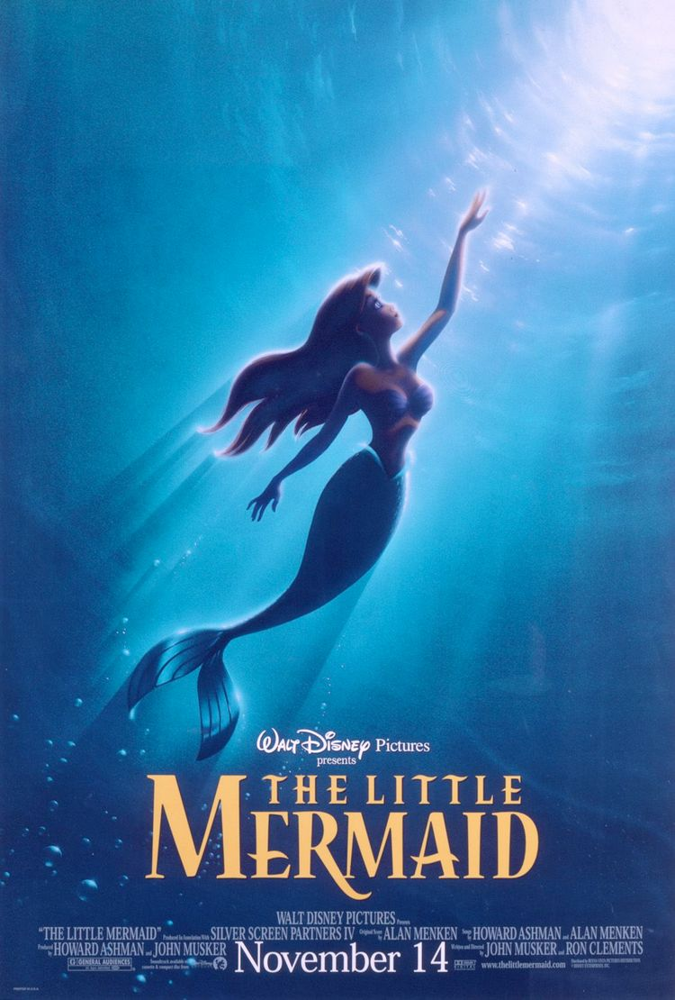
- 제목 : 인어공주(1989)
- OST :
- Part of Your World (저 곳으로)(솔로곡)
- For a Moment
- I remember (난 기억해)
- 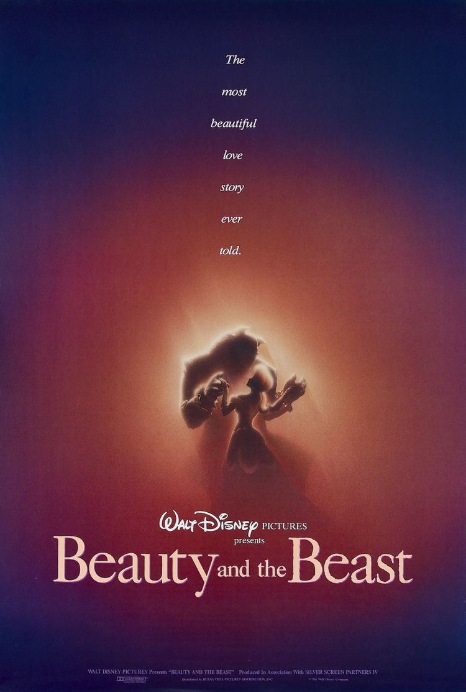
- 제목 : 미녀와 야수(1991)
- OST :
- Belle (아름다운 벨)
- Belle (Reprise) (아름다운 벨)(리프라이즈)
- Something There (놀랄 일이 벌어질 거야)(듀엣곡)
- 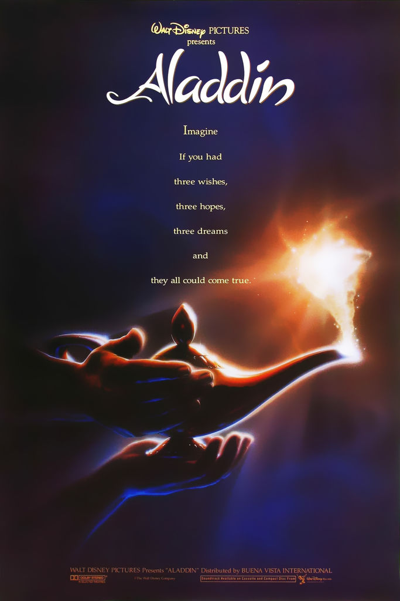
- 제목 : 알라딘(1992)
- OST :
- A Whole New World (아름다운 세상)(듀엣곡)
- A Whole New World (Reprise) (아름다운 세상)(리프라이즈)(듀엣곡)
- Speechless (침묵하지 않아)(솔로곡)
- 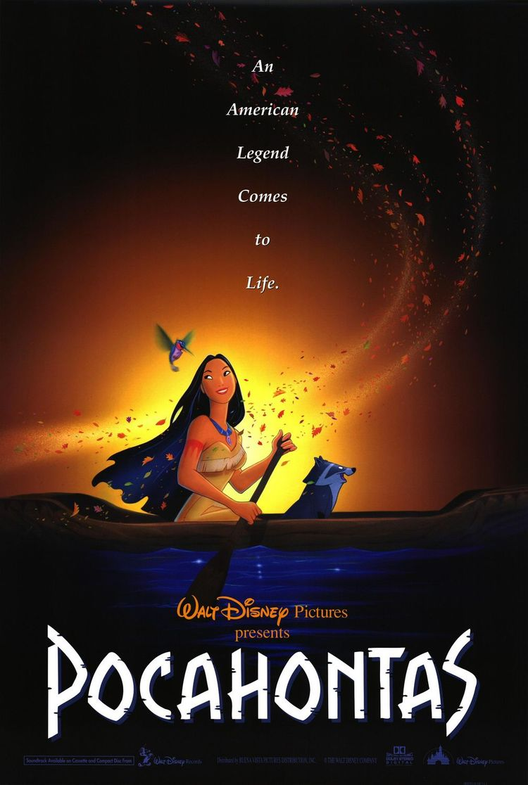
- 제목 : 포카혼타스(1995)
- OST :
- Just Around the Riverbend (강을 따라 가보면)
- Colors of the Wind (바람의 빛깔)
- If I Never Knew You (차라리 만나지 않았더라면)(듀엣곡)
- Savages (전투의 노래)(합창곡)
- 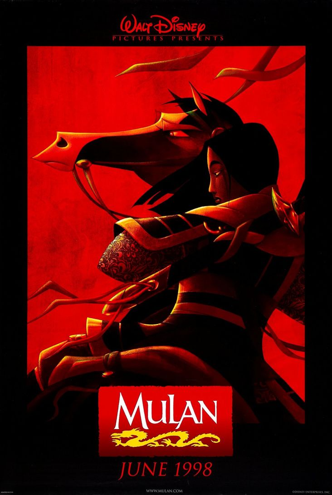
- 제목 : 뮬란 (1998)
- 나이 : 16세
- OST :
- Honor to Us All (가문을 빛낼 거야)
- Reflection (숨겨진 내 모습) (솔로곡)
- 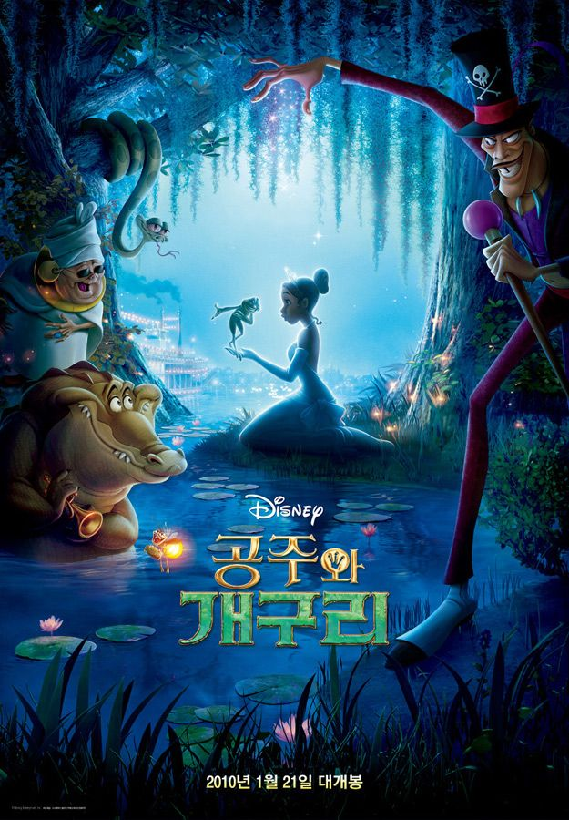
- 제목 : 공주와 개구리(2009)
- OST :
- Almost There
- Almost There (Reprise)
- When We're Human(합창곡)
- Down in New Orleans (Finale)
- 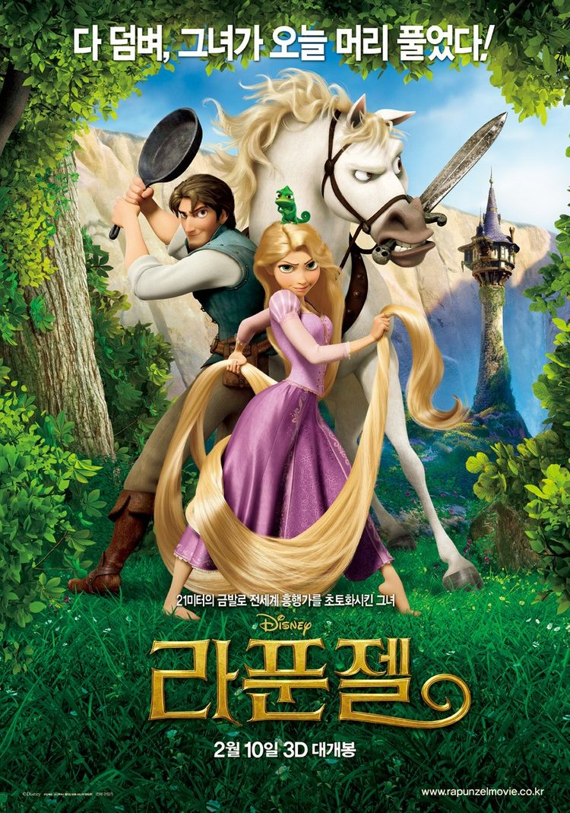
- 제목 : 라푼젤(2010)
- OST :
- When Will My Life Begin?
- When Will My Life Begin? (Reprise 2)
- I've Got a Dream(합창곡)
- I See the Light (빛이 드디어 보여)(듀엣곡)
- 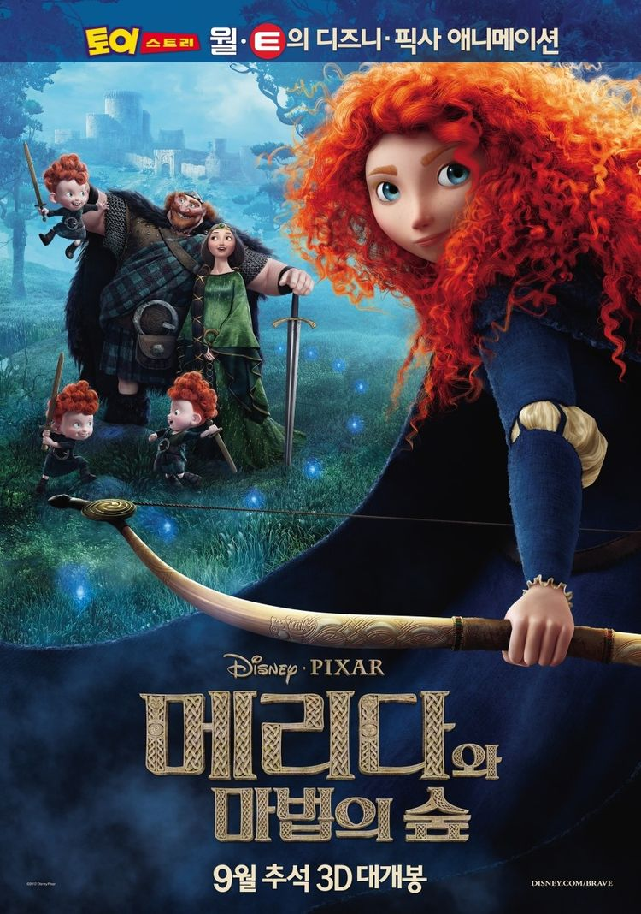
- 제목 : 메리다와 마법의 숲(2012)
- OST :
- Touch the Sky
- Into the Open Air
- Noble Maiden fair (듀엣곡)
- 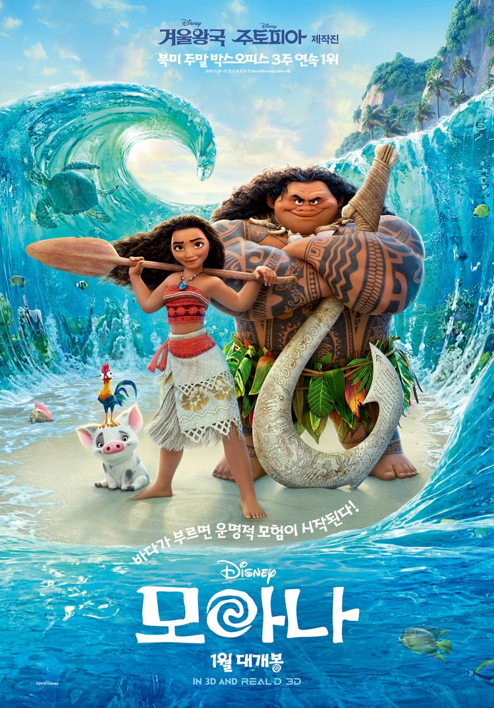
- 제목 : 모아나(2016)
- OST :
- Where You Are(바로 여기야)(합창곡)
- How Far I'll Go(나 언젠간 떠날 거야)
- I Am Moana (Song of the Ancestors)(나는 모아나)(조상의 노래)
- Know Who You Are(너는 너를 알잖아)
- 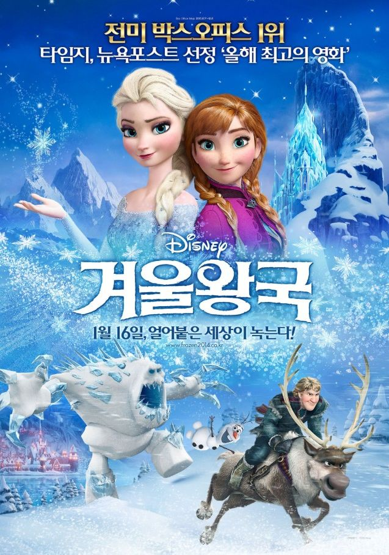
- 제목 : 겨울왕국(2014)
- 나이 : 24세
- OST :
- Love Is an Open Door (사랑은 열린 문)(듀엣곡)
- Do You Want to Build a Snowman? (같이 눈사람 만들래?)
- For the First Time in Forever (태어나서 처음으로)(듀엣곡)
- Let It Go (다 잊어)
- 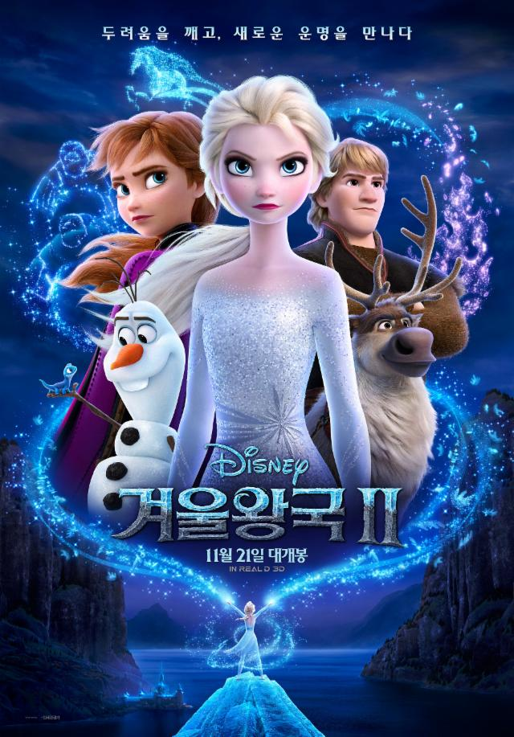
- 제목 : 겨울왕국2(2019)
- OST :
- Some Things Never Change (변치 않는 건)
- Into the Unknown (숨겨진 세상)
- The Next Right Thing (해야 할 일)
- Show Yourself (보여줘)